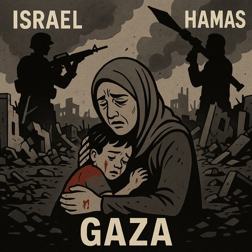

Publicado em 2025-06-01 11:31:28
Por Augustus Veritas
Vivemos tempos em que a palavra “genocídio” é lançada como uma pedra fácil, apontada exclusivamente a Israel, sem hesitação, sem nuance, sem o mínimo de rigor. As redes sociais fervilham de indignação seletiva. As manifestações multiplicam-se. E as manchetes gritam: "Genocídio em Gaza!"
Mas deixem-me dizer-vos, com a serenidade de quem procura a verdade para além das bandeiras:
o sofrimento do povo palestiniano é real, mas o verdadeiro carrasco não se esconde apenas do lado israelita.
Gaza é uma prisão. Mas não é Israel o único carcereiro.
O povo de Gaza está refém de duas forças opressoras:
O Hamas atacou civis israelitas de forma bárbara, sabendo perfeitamente qual seria a reação.
Sabia que Israel responderia com fúria, com força, com destruição.
E ainda assim, avançou. Porque para o Hamas, a dor do seu povo é moeda de troca política.
Cada criança morta é mais uma imagem de impacto, mais uma condenação internacional contra Israel.
Eles apostam no martírio como estratégia.
Não querem coexistir — querem eliminar.
Israel tem o direito de se defender. Mas esse direito tem limites morais.
Bombardear bairros inteiros para atingir um combatente é inaceitável.
Punir milhões por causa de mil é monstruoso.
Mas não é genocídio.
É guerra suja, é brutalidade, é desproporção —
mas não há provas de uma política sistemática de extermínio do povo palestiniano.
Aqui está o ponto que tantos recusam ver:
Porque enquanto o Hamas estiver no poder, Gaza será sempre campo de batalha.
E o povo palestiniano, um povo sacrificado em nome de uma guerra que não pode vencer.
Os irmãos árabes, que tanto dizem amar os palestinianos, nada fazem.
Não acolhem refugiados.
Não pressionam o Hamas.
Não propõem soluções credíveis.
Hipocrisia pura. Palavras sem ação. Gritos sem eco.
Quem quer a paz, tem de ter a coragem de dizer:
o Hamas é um dos principais obstáculos à liberdade palestiniana.
Israel é brutal, sim. Mas o Hamas é cínico, fanático e suicida —
e não representa o futuro do povo que diz proteger.
Faça download deste artigo em PDF :
Ou como esta situação continua no pântano, e nos discursos vazios e oportunistas, dos governos do planeta :